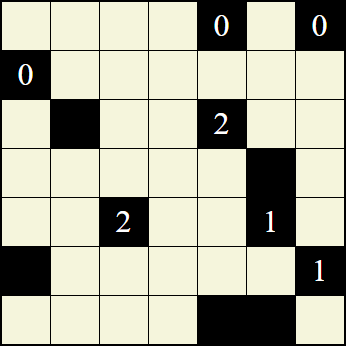
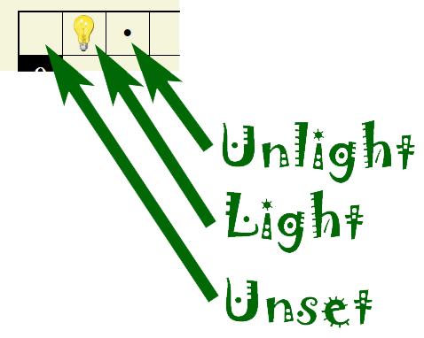

The game of Light Em Up! (sometimes called Lights Up or just Lights) is played on a rectangular grid of cells. Initially the game presents some squares that are shaded black and represent walls. Of those squares, some have numbers in them. This is an example of an initial game presentation:
The unshaded squares are the playing area and are clickable. Each square can be unset, a light, or an unlight:
When the game starts, even playable square is unset. Clicking a square once changes it to a light, which is indicated by a light bulb image. Clicking a cell a second time changes it to an unlight, which is represented by a black dot (HTML •). Clicking the cell again returns it to unset. The object is to place lights so that:
Lights are considered to cast light horizontally and vertically only. The light is stopped by a wall. Unlights are not part of the solution. An unlight is a convenience for the player, since it provides a way to indicate a square the user knows cannot be a light at all.
Light Em Up! solutions are unique. There is only one possible solution to any given game.
Game play proceeds by clicking on cells. Each click toggles a cell value. Click on an unset cell toggles it to a light. Clicking on a light toggles it to an unlight. Clicking on an unlight toggles it back to unset.